News
Lab Updates
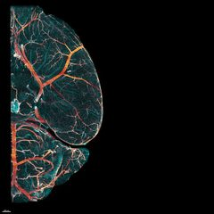
Developmental vascular atlas published in Cell
Our comprehensive 3D atlas of postnatal brain vascularization has been published in Cell. This work reveals a three-phase trajectory of brain vascular development, with implications for understanding neurodevelopmental disorders.
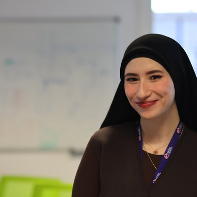
Marwa Cherfaoui awarded an FRM PhD fellowship
Congratulations to Marwa Cherfaoui, who has been awarded a PhD fellowship from the Fondation pour la Recherche Médicale (FRM) for her project on the role of brain macrophages during pregnancy.
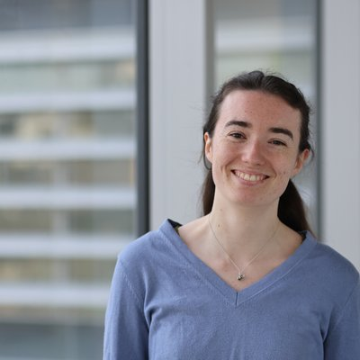
Gabrièle Lienhard awarded an FRM fourth-year fellowship
Congratulations to Gabrièle Lienhard, who has received a fourth-year PhD fellowship from the Fondation pour la Recherche Médicale (FRM) to continue her work on vascular plasticity during pregnancy.
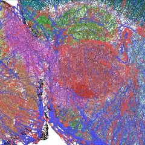
LAMBADA atlas publicly available
The LAMBADA Open Brain Atlas for the developing postnatal mouse brain is now freely accessible at lambada.icm-institute.org.
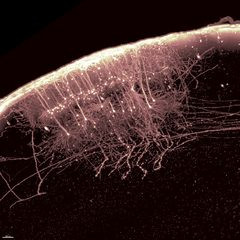
Somatosensory feedback projections paper in iScience
Our study on the organization and development of bilateral somatosensory feedback projections in mice has been published in iScience.
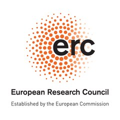
ERC Consolidator Grant awarded to the lab
The lab has been awarded an ERC Consolidator Grant from the European Research Council to study neurovascular plasticity in the mother's brain during pregnancy.
Cercle FSER laureate
Nicolas Renier is a 2023 laureate of the Cercle FSER (Fondation Schlumberger pour l'Éducation et la Recherche), supporting the lab's work on the development and plasticity of the post-natal brain.
FENS–EJN Young Investigator Prize awarded to Nicolas Renier
Nicolas Renier is one of four recipients of the 2022 FENS–EJN Young Investigator Prize, awarded by the Federation of European Neuroscience Societies and the European Journal of Neuroscience, and presented at the FENS Forum.
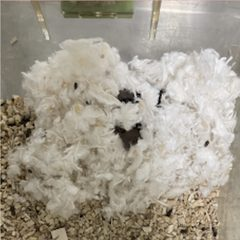
Maternal nesting behavior study in Neuron
Our study identifying Edinger-Westphal peptidergic neurons as enablers of maternal preparatory nesting has been published in Neuron. This work ascribes for the first time an important ethological role to an enigmatic neuromodulatory center.
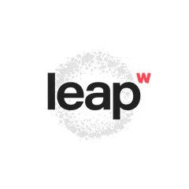
The lab joins the Delta Tissue consortium
The lab has joined Delta Tissue, an international consortium coordinated by Stéphane Pagès at the Wyss Center and funded by Wellcome Leap, to work on the 3D mapping of human glioblastomas.
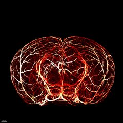
Brain vasculature mapping published in Cell
Our landmark paper on mapping the fine-scale organization and plasticity of the brain vasculature has been published in Cell. The work reconstructs vascular networks spanning 300 meters with 8 million branch points.
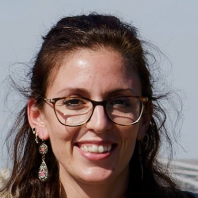
MSCA fellowship awarded to Alba Vieites Prado
Congratulations to Alba Vieites Prado, who has been awarded a Marie Skłodowska-Curie Actions (MSCA) fellowship to work on adult plasticity of the somatosensory cortex.
ERC Starting Grant awarded to the lab
The lab has been awarded an ERC Starting Grant from the European Research Council to work on postnatal brain plasticity.
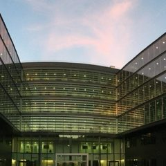
Lab founded at the Paris Brain Institute
Nicolas Renier opens the Laboratory of Structural Plasticity at the Institut du Cerveau (ICM) in Paris, bringing tissue clearing and light-sheet microscopy expertise from Rockefeller University.